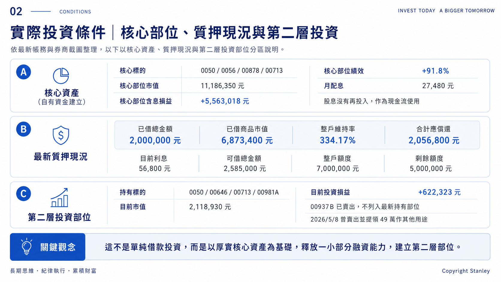
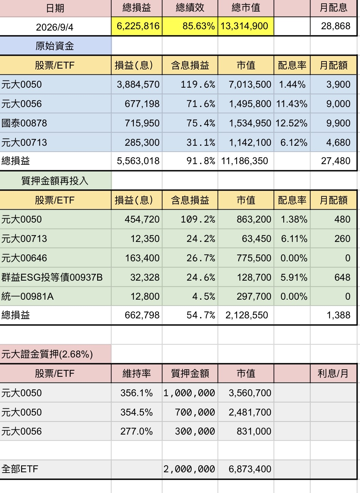
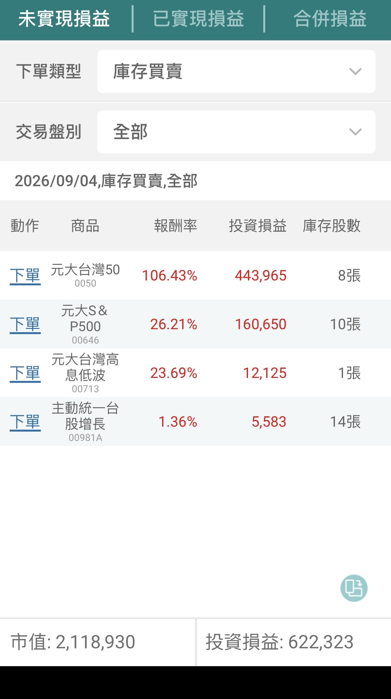

600萬本金怎麼搭出雙層資產
先把核心資產做厚，再用200萬質押建立第二層部位；這一章直接拆解整個實戰結構。
不是先借錢，再想要買什麼；而是先建立核心資產，再有限度地放大可投資本金。

圖解版總覽：整理核心資產、質押現況與第二層投資部位，方便手機閱讀時先快速掌握全貌。
第一層｜核心資產
第一層由自有資金建立，核心標的是 0050、0056、00878、00713。這一層的任務不是追求短期爆發，而是建立足夠厚的資產基礎。
截至 2026/09/04
核心部位市值 11,186,350 元
核心部位含息損益 +5,563,018 元，績效 +91.8%，月配息 27,480 元。
股息沒有再投入，作為現金流使用。
第二層｜股票質押 200 萬
在核心資產建立後，我以股票質押取得 200 萬，再建立第二層部位。最新持有標的是 0050、00646、00713、00981A；00937B 已經賣出。
第二層最新狀態
目前市值 2,118,930 元
目前投資損益 +622,323 元。

原始資料截圖：完整投資總表，包含核心部位、質押再投入與已借商品概況。

原始資料截圖：質押出的 200 萬目前持股，已更新為 0050、00646、00713、00981A。
5/8 的一個重要動作：提領 49 萬
2026/5/8，我曾賣出部分第二層部位，提領 49 萬作其他用途。這代表第二層資產不只存在於帳面，也具備資金調度功能。
本章重點
核心資產先做厚，槓桿才有存在的意義。
借錢不是目的；目的，是讓原本已經存在的資產，在風險可承受的前提下，多一層成長機會。